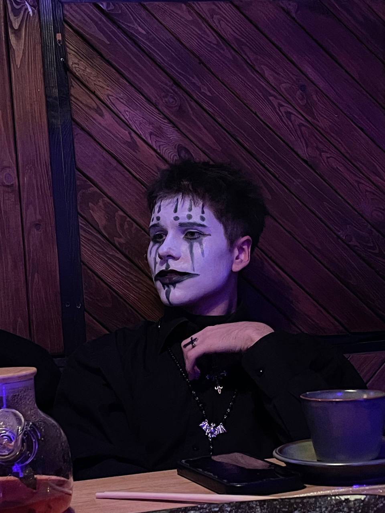
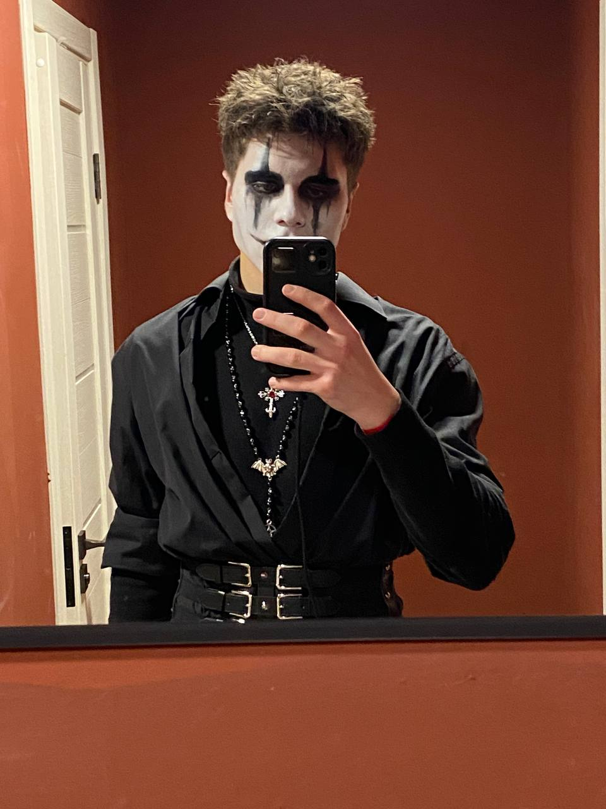

Тут про девушку
Как я уже говорил, у меня есть девушка и я считаю её самой счастливой частью своей жизни, о которой я не могу молчать. У нас с ней много общего, наши интересы и мышление полностью сходятся. Мы обожаем проводить время вместе, смотреть фильмы, гулять, разговаривать на любые темы и кушать суши. Лейла учится на актёрском (искусство мюзикла), её навыки поражают, а ещё она умеет невероятно красиво рисовать.
Это нарисовала она на 14 февраля валентинку
Тут про готов


Мои вкусы постоянно менялись: какое-то время я мог часами слушать рэп, рок или метал, но по итогу я понял, что больше всего моему слуху близка готическая музыка. От The Cure, которые вдохновили нашу отечественную группу Кино, до Christian Death с их эпатажными строчками песен.
Мой топ готических групп
- The Cure - классическое звучание (gothic rock) и глубокий смысл, а песня Just Like Heaven и вовсе является нашей с девушкой любимой
- Christian Death - мрачная death rock альтернатива британскому gothic rock. Пожалуй, если The Cure я готов слушать при любом настроении, то Christian Death я включаю, когда мне хочется фантазировать, представлять какие-то сюжеты
- Siouxsie And The Banshes - женский вокал, "мать" всех готов. Тут уже что-то воодушевляющее для меня
- Cemetary Girlz - дряблое звучание как скрежет металла, но мне такое особенно нравится
И всё же многие группы также заслуживают внимания, но я выделил те, которые как либо связаны с моей жизнью, помогли мне понять мои чувства и эмоции